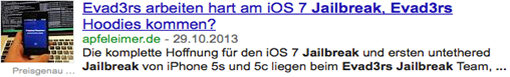
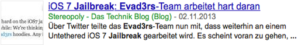

Web-basierte Anwendungen 1
Suchmaschinenoptimierung
21. November 2013
Studiengang Medieninformatik an der Fachhochschule Köln
Campus Gummersbach
Carolina Singh
Timon Blask
Dennis Meyer
SEO Ablauf
1 Präsentation
- Einführung in die Grundlagen
- On-Page Optimierung
- Off-Page Optimierung
2 Übungssession
- Fragen zur Theorie
- Praktischer Aufgabenteil
Was bedeutet SEO eigentlich?
- Search Engine Optimization
- inhaltliche und technische Optimierung von Webseiten
- Ziele:
- positive Bewertung durch Suchmaschine
- Reichweite verbessern
- Umsatz steigern
- ggf. verbesserte User Experience
- 2 Arten der Einflussnahme: On-Page & Off-Page
Wie funktioniert eine Suchmaschine?
- Surfverhalten der Nutzer nachbilden
- Crawler rufen Seiten automatiert & regelmäßig ab
-
Aufnahme in ein Verzeichnis => Indexierung
- interpretiert Markup & semantische Bedeutung
- Bewertet die Wichtigkeit (<title>, <h1>, <small>, ...)
- Folgt Links für eine weitere Indizierung (<a> und <area>)
Wie sieht das aus?
http://www.google.com/intl/de/insidesearch/howsearchworks/thestory/Was erwartet der Anwender?
- "beste" Seite zum Suchbegriff
- relevant und angepasst an jeweilige Zielgruppe...
-
... entsprechend den individuellen Erfahrungen und Interessen
-
angelehnt an Bewertungskriterien des Menschen:
- Position des Suchbegriffs auf der Seite
- Vertrauenswürdigkeit der Domain
- Performance der Webseite
Was sollte man beachten?
Grundsätzliches:
- klar strukturierter Aufbau
- saubere, aussagekräftige Sprache und Bezeichnungen
- Content mit Mehrwert und Relevanz
- interne Verlinkungen
- Standpunkt des Nutzers betrachten
Suchmaschinen benutzt jeder
Doch wie sah das nochmal aus?

On-Page
...
Was ist Off-Page Optimierung
...
PageRank
...
Links
...
Wie bewerten Suchmaschinen Links
- in welchem Verhältnis stehen die Seiten zueinander?
- Welchen PageRank hat die Seite von der der Link kommt?
- Wie lange kennt die Suchmaschine den Link schon?
Welche Arten von Links gibt es?
Welche Arten von Links gibt es?


Google Bombe
Google Bombe
Und nun zur Übungsession
Theorie
- Bearbeitung der Handouts
- Arbeitszeit ca. 10 Minuten
Praktischer Teil
- Code Aufgaben Arbeitsblatt
- Arbeitszeit ca. 10 Minuten
- interaktive On-Page Optimierung
- Arbeitszeit ca. 10 Minuten
- zu finden unter ...